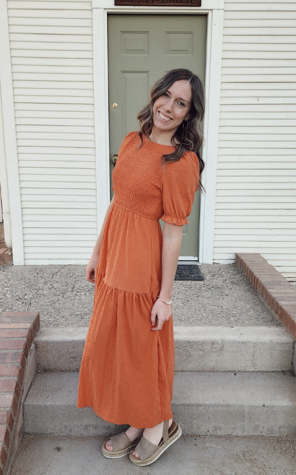

THE PERSON BEHIND THE PRACTICE
Meet Cadence.
Thoughtful bodywork, meaningful connection, and care that centers on you.

A LITTLE ABOUT ME
Care with intention.
My name is Cadence Da Silva, and I am deeply passionate about massage therapy. I am committed to supporting the well-being and ongoing improvement of my clients through thoughtful, client-centered care.
I value meaningful connection, whether through my work, serving others, or spending time in nature and exploring new places through travel.
Massage therapy allows me to serve in a powerful and personal way by helping individuals improve their quality of life, reduce discomfort, and move through day-to-day activities with greater ease and enjoyment.
My therapeutic deep-tissue bodywork is intended to support comfort, relaxation, and recovery, including for people with active lifestyles.
Book a Session ↗HERE FOR YOUR WELL-BEING